Premium Visual Portfolio
Instagram-style beauty, crafted into a real website.
A polished, modern portfolio for @anay_clickz, built with HTML, CSS, and JavaScript and enhanced with modern layout techniques, smooth interactions, theme switching, filtering, and a fullscreen lightbox.
Responsive
Dark / Light Mode
Instagram-style Masonry
Fullscreen Viewer
Featured Frames
Editorial highlights
A curated section that gives your strongest images extra emphasis before the full feed-style gallery.
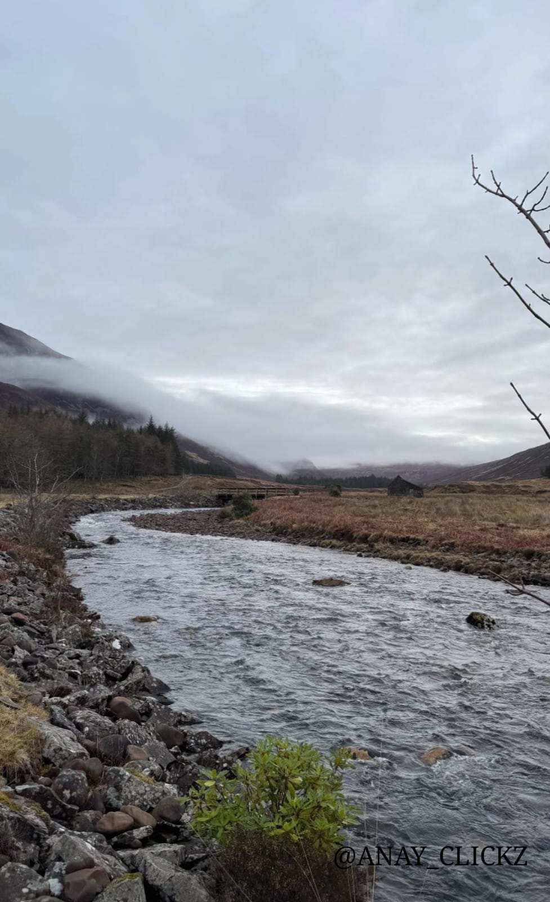
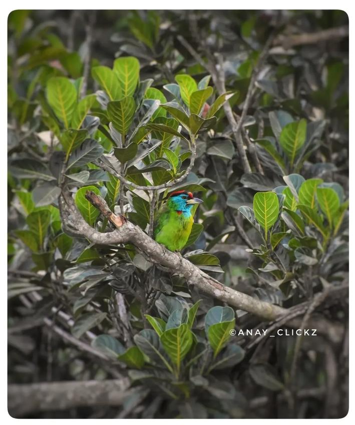
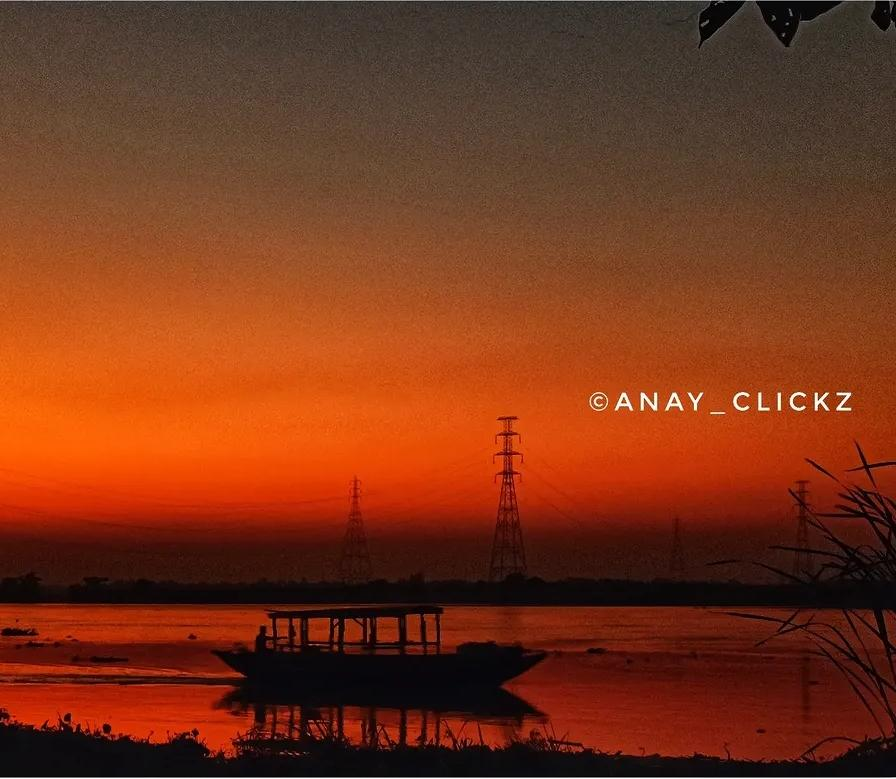
Main Gallery
Instagram-style layout
Use the filters, click any photo to open it fullscreen, and switch between dark and light mode.

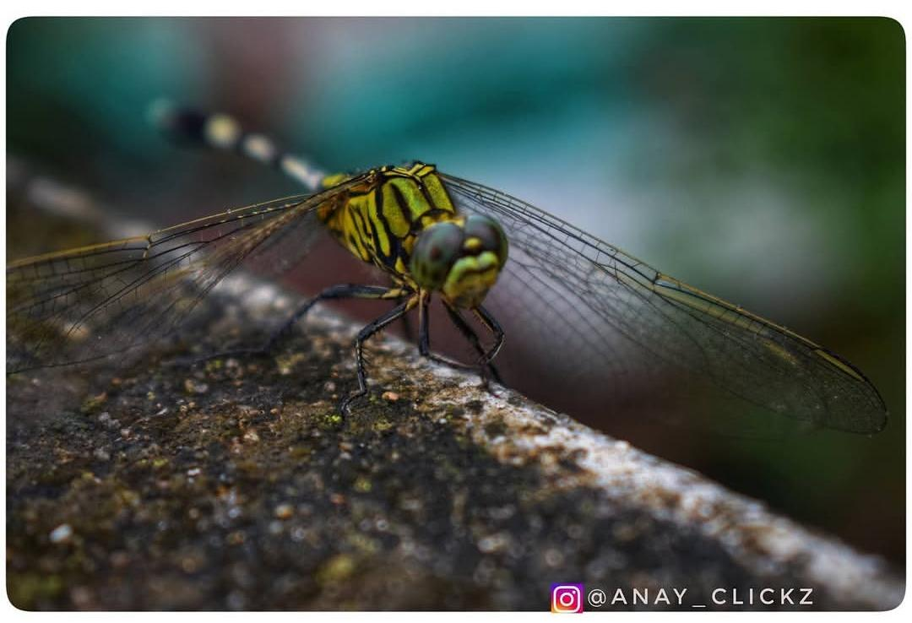
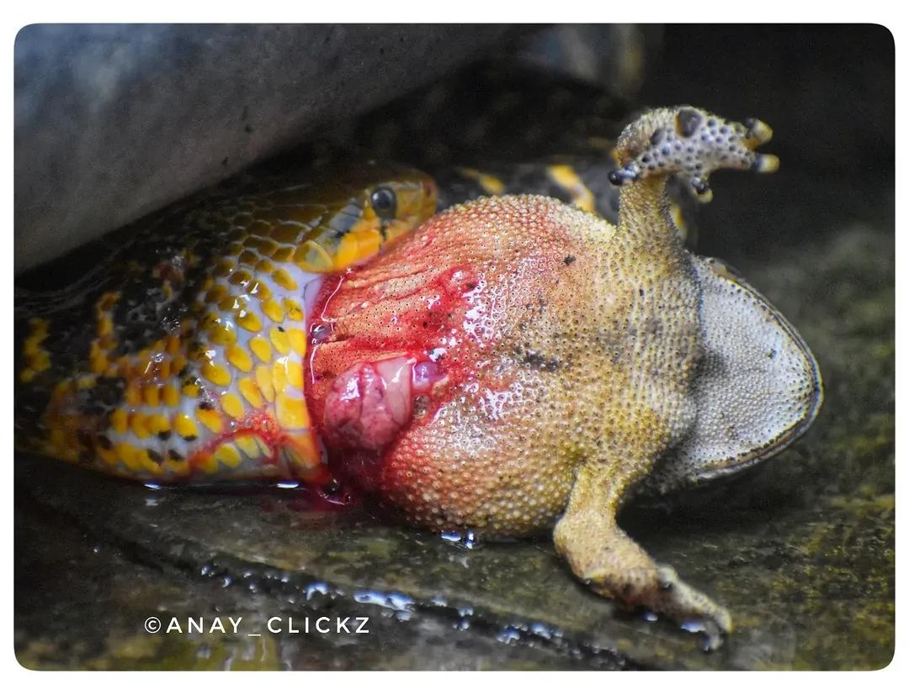
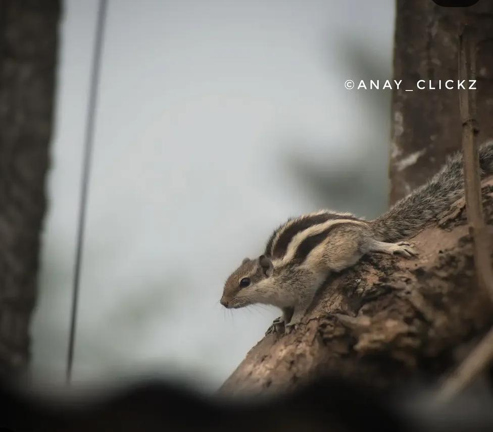

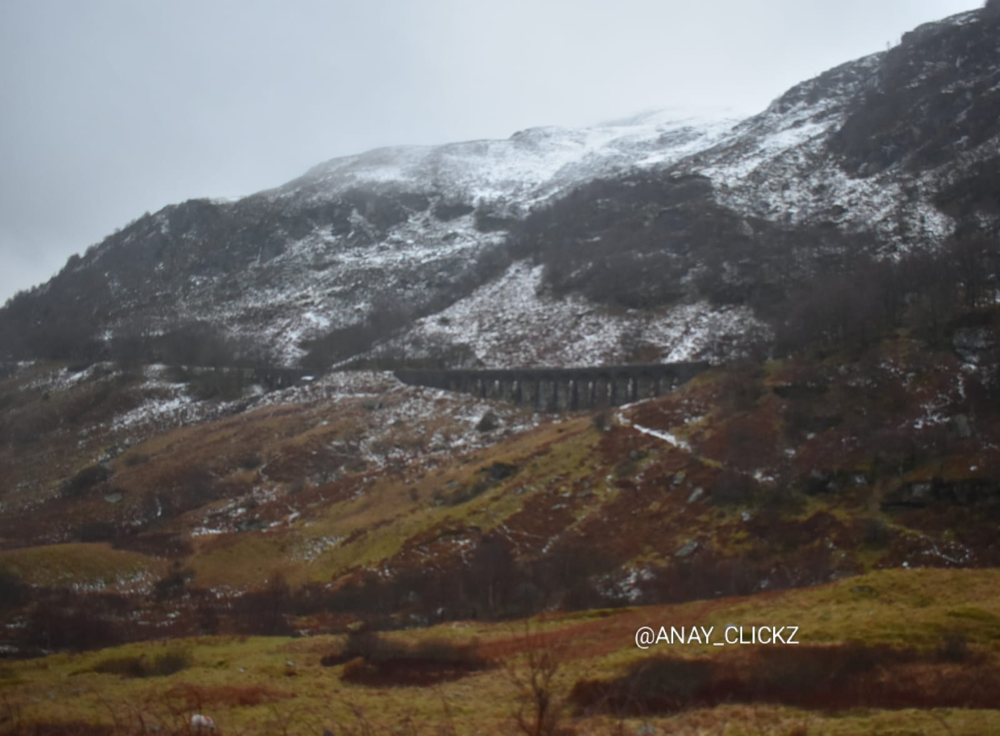
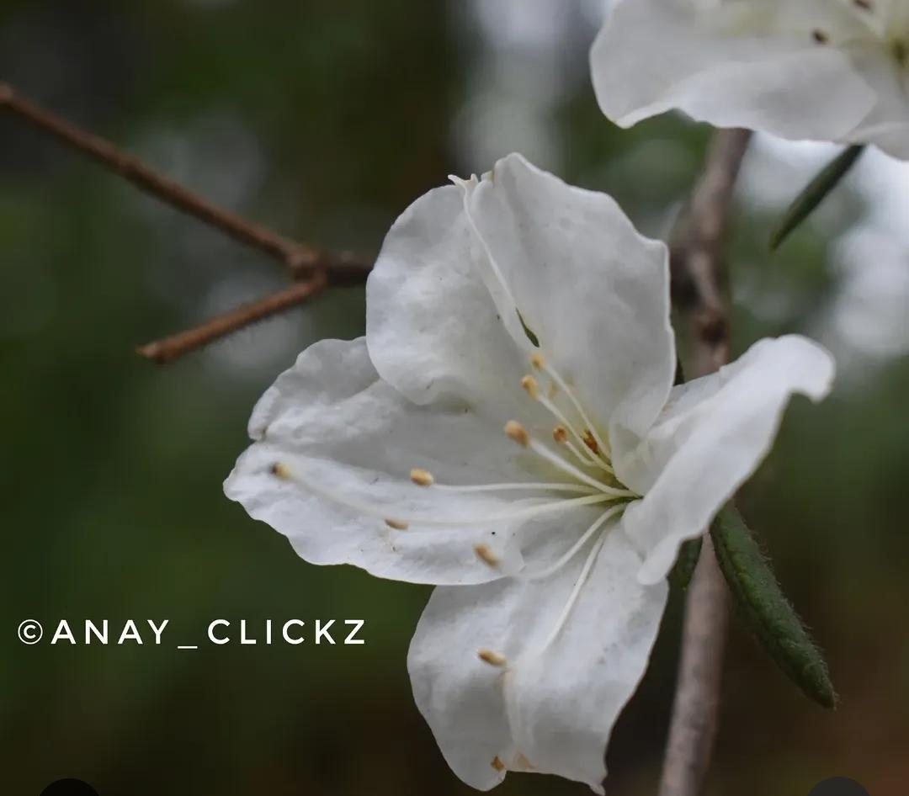
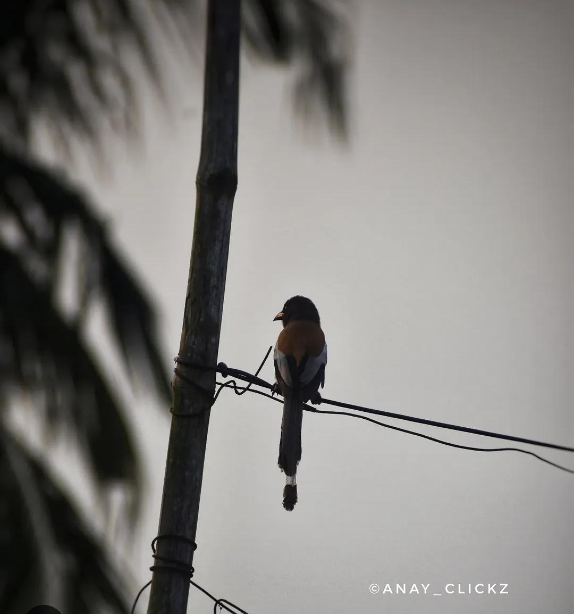
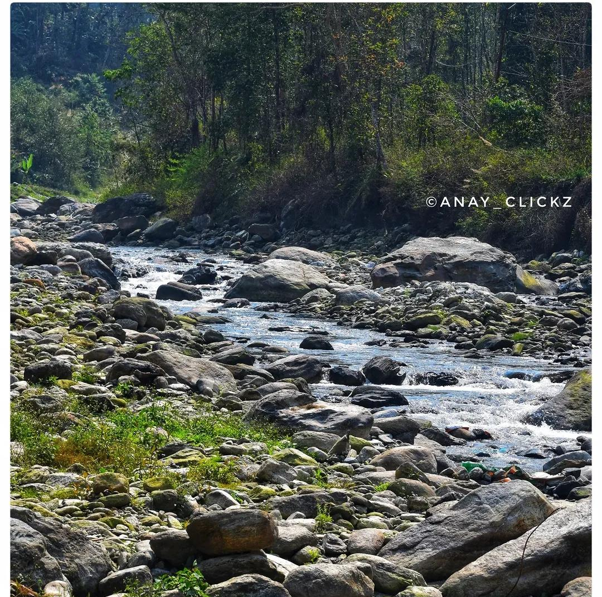
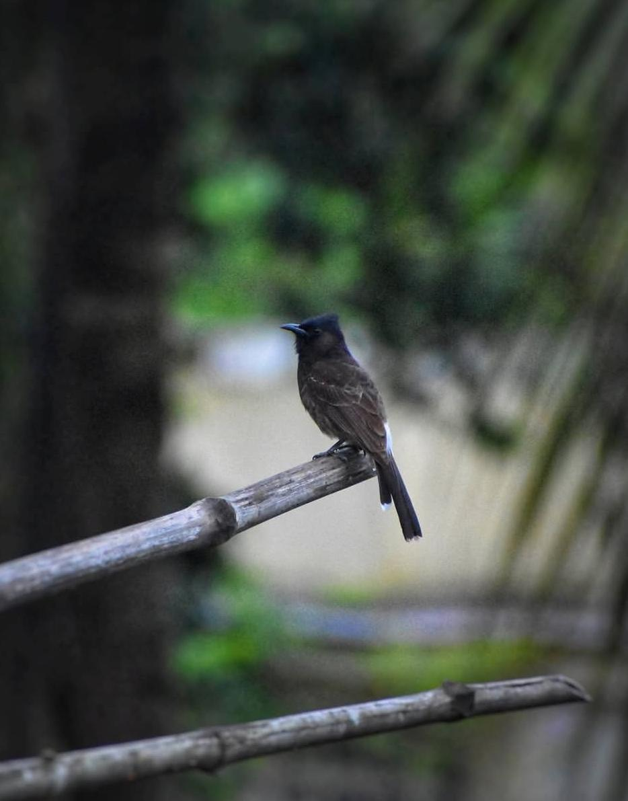
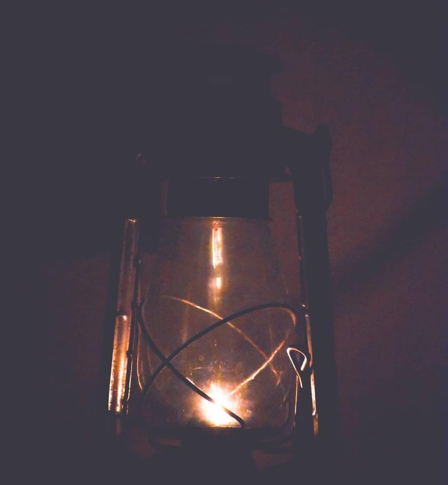
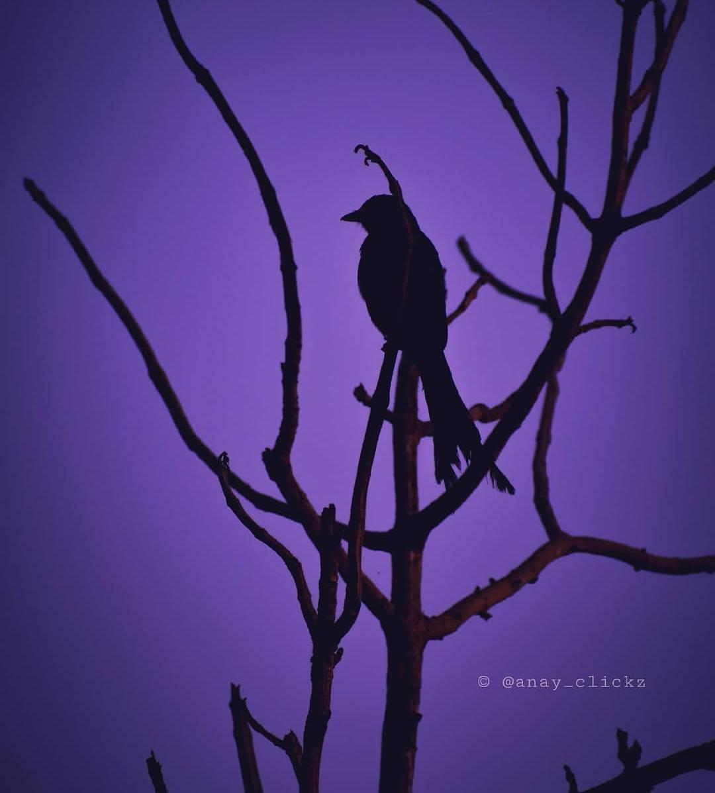
Why this works
Built for GitHub, designed like a real brand portfolio.
This site keeps your mandatory stack of HTML, CSS, and JavaScript, then uses modern techniques like CSS masonry-style columns, glassmorphism, responsive grids, theme switching, scroll reveals, and a custom fullscreen viewer to make the experience feel premium without becoming difficult to upload or maintain.
Connect
Show the portfolio, then guide visitors to Instagram.
This website works as your main showcase page while Instagram remains your full content feed.